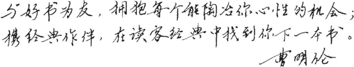
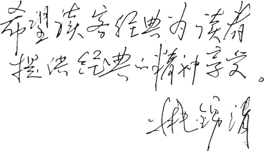

曹明伦
四川大学教授、博士生导师，中国作家协会会员，中国翻译协会理事、成都翻译协会会长，国务院政府特殊津贴专家。译有《爱伦·坡集》《弗罗斯特集》《培根随笔集》《莎士比亚十四行诗集》等多种英美文学经典。

姚锦清
上海外国语大学高级翻译学院教授，上海市语委英译专家。参编《20世纪欧美文学史》《外国文学名著赏析辞典》及《外国抒情诗赏析辞典》。主要译作有《布赖顿硬糖》《心灵的激情——弗洛伊德传记小说》等。